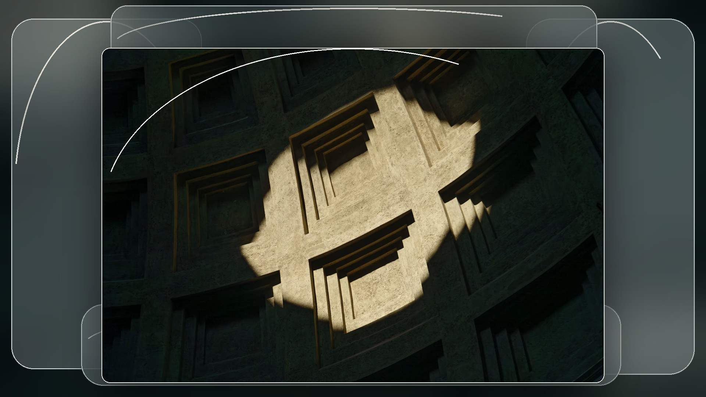
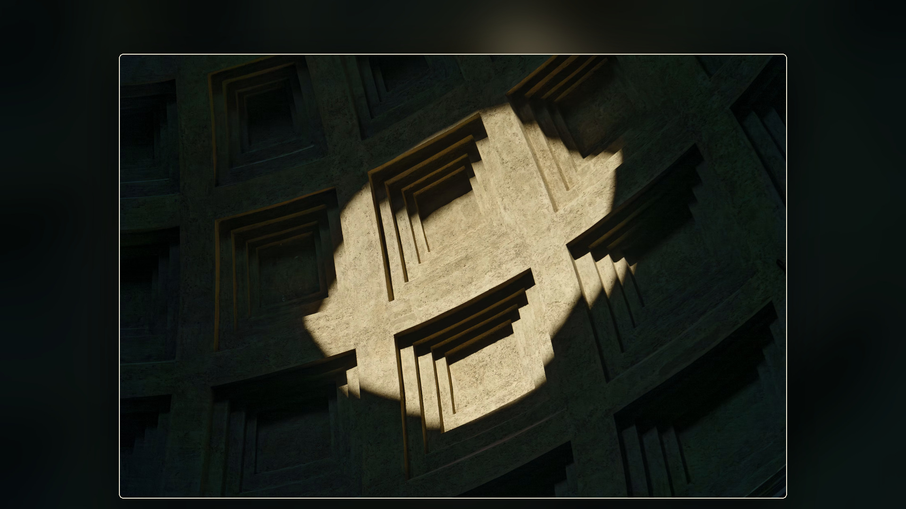
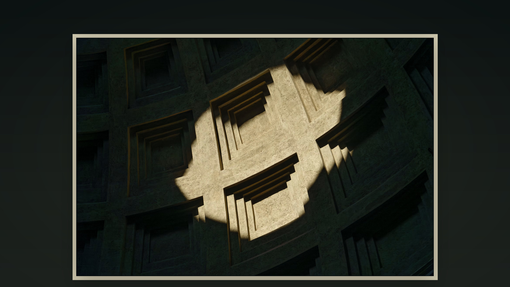
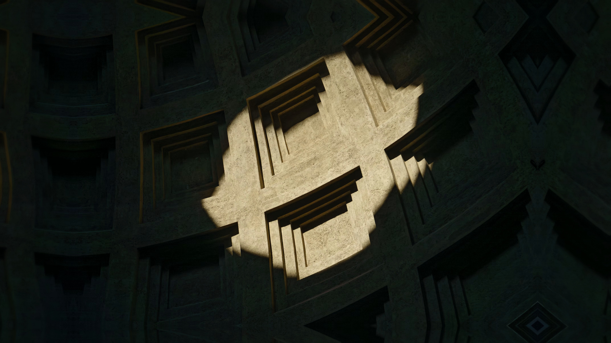

기존 시안 · 개념 합성
2026-10-28 · Brave 기본 새 탭을 위한 정적 배경 조사. 원본 전체를 선명하게 보존하면서 흐림과 유리의 표현 가능성을 비교한다.
이 보고서는 조사 버전이며 기존 Git 태그와 별개다. 조사 계획 · 원리와 코드 · 상세 비교 · 2단계 초안
기존 시안 · 이미지 파일을 상대경로로 참조한다. 네 장 모두 최종 디자인은 아니다.




배경과 원본을 분리해 처리한다. 굴절은 변위 맵으로 배경의 샘플 좌표를 옮기는 근사이며, 마지막 합성에서 원본을 보호한다.
Fuzzy는 확대·블러 뒤 합성한다. 가장자리 반복 또는 반사 확장과 페더링은 대안이다. Glassy는 다층 블러와 변위, 색조, 경계 하이라이트를 더한다.
| 후보 | 기능과 직접 설계할 부분 | 저장·macOS | 라이선스 / 복잡도 |
|---|---|---|---|
| Pillow + NumPy | 블러·합성 / 변위·보간 | JPEG/PNG, Python 배치; ARM 배포 파일 확인 | PIL / BSD-3-Clause · 중간 |
| libvips + pyvips | 블러·재매핑 / 맵·합성 규칙 | CLI·Python, macOS ARM 바이너리 안내 | LGPL-2.1+ / MIT · 중상 |
| ImageMagick | 블러·가상 픽셀·변위 / 프리셋 | CLI·배치, Homebrew | ImageMagick 라이선스 · 중상 |
| OpenCV | 블러·remap / 색상·합성 규칙 | Python 배치, macOS 설치 안내 | Apache-2.0 (4.5+) · 중상 |
| 웹 셰이더 | 굴절·광택 / 캡처·정적 출력 | 브라우저 및 WebGL 필요 | 예제 MIT · 높음 |
| Core Image / Metal | Apple 필터·GPU / 효과 구현 | Apple SDK와 macOS 개발 환경 | Apple SDK 조건 · 높음 |
복잡도는 추론이다. ARM 실행, 배치 속도, 설치 및 품질은 미검증이다. 라이선스와 유지보수 근거는 상세 비교를 참조한다.
설명용 배경 생성의 일부다. 원본 배치와 색상 관리는 별도로 필요하다.
from PIL import Image, ImageFilter, ImageOps
im = Image.open('input.jpg').convert('RGB')
bg = ImageOps.fit(im, (1920, 1080)).filter(ImageFilter.GaussianBlur(24))
bg.save('background.jpg', quality=90)외부 구현 예제 liquidglass WebGL 저장소는 굴절과 광택의 참고 사례다. MIT 코드의 고지를 보존하고 에셋 권리는 별도 확인한다. Canvas toBlob으로 캔버스 내용을 정적 PNG 또는 지원되는 JPEG로 저장할 수 있다. CSS 배경 효과는 자동으로 캔버스에 들어가지 않으므로 별도 렌더링 또는 캡처를 검증해야 한다.
우선 Pillow + NumPy, 대안 libvips + pyvips. 사진별 시각 품질을 평가한 후 도구를 확정한다.
라이브러리 설치, 사진 선정, 렌더링과 벤치마크는 아직 수행하지 않았다. Python 버전과 CLI, 효과 수치는 미확정이다.
공식 문서의 기능 설명은 확인했으나 이 환경에서 실행하지 않았다. 외부 데모 이미지는 재배포하지 않는다.